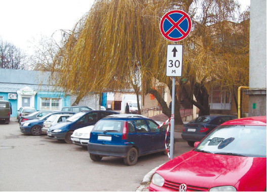
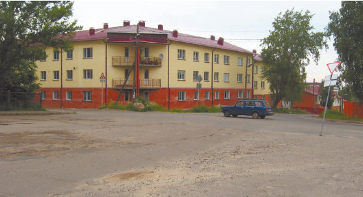

«Тебя посадят, а ты не нарушай!»
Начинающий водитель зачастую не может адекватно оценить не только дорожную обстановку, но и правомерность, а также необходимость наличия тех или иных разрешающих и запрещающих знаков (рис. 2.20). Опытный водитель знает: если знак висит в данном месте, значит, так нужно, и поедет под него только в случае крайней необходимости, когда вообще нет другого выхода.

Рис. 2.20. Грубое нарушение ПДД – стоянка в зоне действия знака «Остановка запрещена»
Новичок же может рассуждать с точки зрения логики. Например, если на перекрестке висит знак «Поворот направо запрещен», то включиться может следующая логическая цепочка: «Поворот запрещен, но запрещен правый поворот. Так это ведь не левый, и на перекресток выезжать не нужно. А мне требуется именно направо. Это маневр несложный, помех я никому не создам, так что можно потихоньку проехать под этот знак. Тем более что ехать нужно совсем немного, метров 30». И поворачивает под запрещающий знак. И сталкивается с автомобилем, двигающимся в противоположном направлении. Потому что, как оказывается, водитель повернул на дорогу с односторонним движением. Чаще всего в начале такой дороги висит не только знак, запрещающий поворот, но еще и «кирпич», но это не обязательно.
По отношению к дорожным знакам и разметке новички за рулем склонны к еще одной ошибке: вместо того чтобы самостоятельно следить за знаками, они пристраиваются за «опытным» автомобилем или общественным транспортом и едут так же, как и их ведущие. Но ведущий может оказаться и злостным нарушителем. А в ситуации с общественным транспортом возможны разнообразные неожиданности, ведь такому транспорту частенько разрешен проезд там, где другим участникам дорожного движения ехать ну никак нельзя. К примеру, во многих местах висит знак «Поворот налево запрещен», но он не относится к общественному транспорту, и новичок, благополучно пристроившийся за автобусом, поворачивает вслед за ним налево, злостно нарушая ПДД, что ему объяснит инспектор ГИБДД, который на этом повороте только и дожидается таких нарушителей.
Чтобы не попадать в подобные ситуации, следует внимательно наблюдать за знаками на дороге и дорожной разметкой, соблюдать все предписания и не пытаться подменить ПДД собственными рассуждениями (рис. 2.21).

Рис. 2.21. Даже в таких глухих местах нужно соблюдать ПДД и следовать знакам – автомобиль может появиться совершенно неожиданно
Примечание
Инспекторы ГИБДД очень любят устраивать засады в «сомнительных» местах, отлавливая именно тех водителей, которые склонны к построению логических цепочек по принципу: «Знак-то, конечно, висит, но ведь я никому не помешаю…»